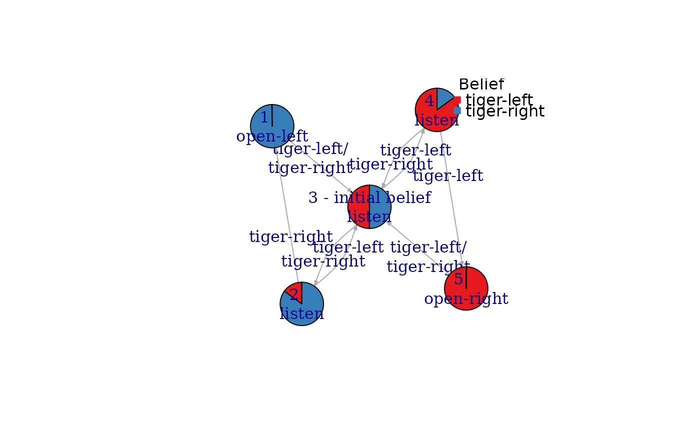

The function creates a POMDP policy graph for a converged POMDP solution and a policy tree for a finite-horizon solution. The graph is represented as an igraph object.
Usage
policy_graph(
x,
belief = NULL,
show_belief = FALSE,
state_col = NULL,
simplify_observations = FALSE,
remove_unreachable_nodes = FALSE,
...
)Arguments
- x
object of class POMDP containing a solved and converged POMDP problem.
- belief
the initial belief is used to mark the initial belief state in the graph of a converged solution and to identify the root node in a policy graph for a finite-horizon solution. If
NULLthen the belief is taken from the model definition.- show_belief
logical; show estimated belief proportions as a pie chart or color in each node?
- state_col
colors used to represent the belief over the states in each node. Only used if
show_beliefisTRUE.- simplify_observations
combine parallel observation arcs into a single arc.
- remove_unreachable_nodes
logical; remove nodes that are not reachable from the start state? Currently only implemented for policy trees for unconverged finite-time horizon POMDPs.
- ...
parameters are passed on to
estimate_belief_for_nodes().
Details
Each policy graph node is represented by an alpha vector specifying a hyperplane segment. The convex hull of the set of hyperplanes represents the value function. The policy specifies for each node an optimal action which is printed together with the node ID inside the node. The arcs are labeled with observations. Infinite-horizon converged solutions form a single policy graph. For a finite-horizon solution, a policy tree is produced. The levels of the tree and the first number in the node label represent the epochs.
The parameters show_belief, remove_unreachable_nodes, and simplify_observations are
used by plot_policy_graph() (see there for details) to reduce clutter and make the visualization more readable.
These options are disabled by default for policy_graph().
Examples
data("Tiger")
### Policy graphs for converged solutions
sol <- solve_POMDP(model = Tiger)
sol
#> POMDP, list - Tiger Problem
#> Discount factor: 0.75
#> Horizon: Inf epochs
#> Size: 2 states / 3 actions / 2 obs.
#> Start: uniform
#> Solved:
#> Method: ‘grid’
#> Solution converged: TRUE
#> # of alpha vectors: 5
#> Total expected reward: 1.933439
#>
#> List components: ‘name’, ‘discount’, ‘horizon’, ‘states’, ‘actions’,
#> ‘observations’, ‘transition_prob’, ‘observation_prob’, ‘reward’,
#> ‘start’, ‘info’, ‘solution’
policy_graph(sol)
#> IGRAPH 0193a27 D--- 5 10 --
#> + attr: label (v/c), id (v/n), action (v/c), size (v/n), label (e/c),
#> | observation (e/c), arrow.size (e/n)
#> + edges from 0193a27:
#> [1] 1->3 2->3 3->4 4->5 5->3 1->3 2->1 3->2 4->3 5->3
## visualization
plot_policy_graph(sol)

### Policy trees for finite-horizon solutions
sol <- solve_POMDP(model = Tiger, horizon = 4, method = "incprune")
policy_graph(sol)
#> IGRAPH ad4b2c8 DN-- 26 46 --
#> + attr: layout (g/n), name (v/c), id (v/c), epoch (v/n), action (v/c),
#> | size (v/n), label (e/c), observation (e/c), arrow.size (e/n)
#> + edges from ad4b2c8 (vertex names):
#> [1] 1-1\nopen-left ->2-5\nlisten 1-2\nlisten ->2-5\nlisten
#> [3] 1-3\nlisten ->2-5\nlisten 1-4\nlisten ->2-6\nlisten
#> [5] 1-5\nlisten ->2-7\nlisten 1-6\nlisten ->2-7\nlisten
#> [7] 1-7\nlisten ->2-8\nlisten 1-8\nlisten ->2-9\nopen-right
#> [9] 1-9\nopen-right->2-5\nlisten 2-1\nopen-left ->3-3\nlisten
#> [11] 2-2\nlisten ->3-2\nlisten 2-3\nlisten ->3-3\nlisten
#> [13] 2-4\nlisten ->3-3\nlisten 2-5\nlisten ->3-4\nlisten
#> + ... omitted several edges
plot_policy_graph(sol)
 # Note: the first number in the node id is the epoch.
# Note: the first number in the node id is the epoch.